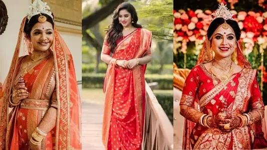

Korial and Garad Sarees
Garads are traditional Bengali sarees that are white with deep red borders. These sarees have religious importance and are popular during Durga Poojas, ceremonies, and weddings. A typical Bengali ivory or conch shell is worn, paired with Red Bangles. Garad Sarees are the epitome of elegance and grace for Bengali women.